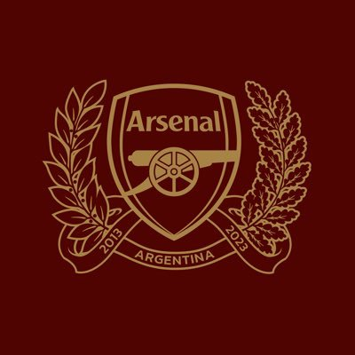

Below are some of the photos of our meetups from the past and a few photos of our new soccer team which we are very proud of, if the photos below interest you please contact the email above. All photos were taken in recent years post-covid.


Looking for a community? A place to play? A watchparty? We got you!

The best time, with the best people, all for the best team
Come to Arsenal Argentina today, check out our social media's to stay updated on the latest news and supporters club meetings. We meet at Sullivan's Pub in Palermo, Buenos Aires. You can get connected with us via our email listed above our by sending a message via and y of the means lsited. Exited to see you and have you part of our family!